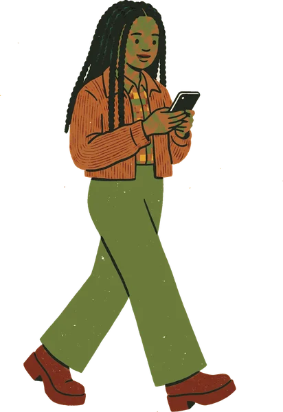
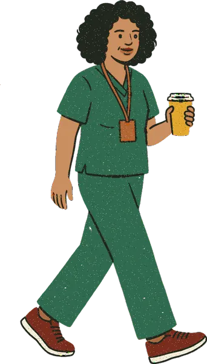
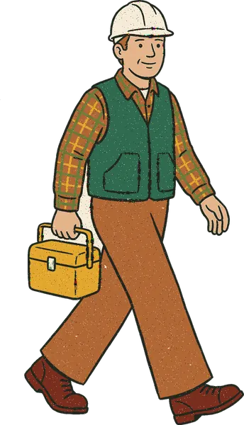
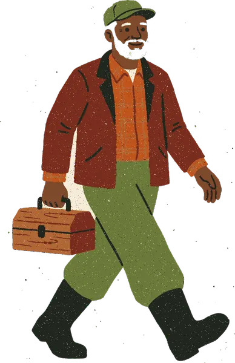
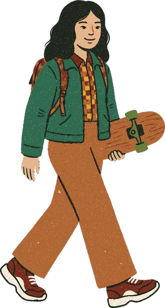
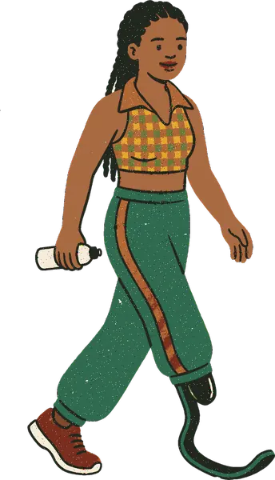

The plan in one paragraph
Phones get more pictures without adding any to the first screen, the lists or the frozen candidate pages. There is a magnifier beside “On this page”, and line icons on the voter’s own tasks: the sample-ballot tiles, the key-dates actions and the four /privacy headings. A wave marks the seam between the statewide races and the ballot questions. One still row of all eight hero walkers, all the same height and evenly spaced, stands on the wave after the coverage card and appears once more on /about. The error page gets the 404’s spot. Three resized files pay for all of it. Nothing moves below lg, and the first screen gains only a 14px inline calendar icon.
PR 1Lighter files
A 750w phone footer, plus -xs files for the sitter and the cat. Nothing looks different. Not frozen, but it merges by Fri Oct 16 because the footer renders on frozen pages.
PR 2frozenSeam wave + /methodology magnifier
SharedBallot.tsx and methodology/page.tsx. Merge by Fri Oct 16, or drop until after Nov 4. It also carries the new design.md line.
PR 3Icons, magnifier, error spot, docs
Glyphs, the sample-ballot tiles, the key-dates actions, /privacy, the “On this page” magnifier and error.tsx. Not frozen; aim for Oct 16, may slip.
PR 4The walker row
Re-tone the fisherman to skin-6, compose the row, then place it on home and /about. Not frozen; about Oct 20.
How the judges were reconciled
Where the two judges differed, the call went to neutrality first, then the evidence, then risk.
| Point | Judge 1 | Judge 2 | Call | Why |
|---|---|---|---|---|
| Walker-row file | 3x, ~35KB | 2x, ~21KB | 2x; 3x as fallback | Test files: 19.5KB (2x) and 32.7KB (3x). Faces are ~6px tall at 48px, so 3x adds no visible detail. Check in Safari on a 3x iPhone. |
| Placing the row | LedgeArt + ledges.json | Art, absolute bottom-[6px] right-0 | Art, absolute | Measured: every walker file has its soles on the last pixel row, so the composite’s bottom edge is the sole line. |
| “On this page” magnifier | Drop hidden lg:block | Add an lg:hidden twin | Drop the gate | The same file at 30px at every width, so one element is enough. |
| /methodology magnifier | 40px, +11px | 30px, 0px | 30px, in flow | The same size as “On this page”. Placed absolutely, it would overflow at 320px with a 20px root font. |
| /privacy | An envelope on one heading | Icons on all four headings | Four icons | Neutrality: every section is marked the same way. 0KB, 0px at 375. |
| Error page | Import Art | Plain img | One plain img, 120 / lg 220 | error.tsx is a client file. A plain img keeps art-sizes.json out of the client JS and matches the 404 at both widths. |
| No-district legend | Dropped | Recommended yes | Decision 6, recommended no | Neutrality is equal. Risk decides: +54px, four new labels, and it reads as tappable above the disclosure rows. |
| Ballot icon | “Blank ovals and lines” | A ruled sheet, no ovals | My finding: at 20px a 1.75 stroke fills small ovals, and a filled oval reads as a marked ballot. | |
| Skin-6 | generate.py skinmask | Swap the exact pixels | Swap; regenerate if the eyes fade | My finding: his eyes are ink. Ink on skin-5 is 2.1:1, and on skin-6 it would be 1.25:1. |
Home at 375px: before and after
The whole page with no district saved and no install or reminder card, the state the founder measured. Every block sits at its measured y. The ruler marks each section’s top in CSS px, and the green band is the first screen (y 45–739, between the bars). The art is the real files. The walker row is composed here from the eight -sm files, and the fisherman shows today’s skin-5 (decision 4 would re-tone him). The fonts fall back to system fonts, so lines may wrap a little differently from the live site, but the block heights are the measured ones. Numbered pins jump to the placements table.
Request a vote-by-mail ballot by 5 p.m. on October 22 · Election Day is November 3
- Registration deadline October 5 · Passed
- Today October 14
- Mail-ballot request deadline October 22 · Next
- Early voting October 24 to October 31
- Election Day; mail ballots due November 3
Add these dates to your calendar (downloads a file)
")
- Ashley Moody (REP)
- Angie Nixon (DEM)
- Neil J. Gillespie (NPA)
- Byron Donalds (REP)
- David Jolly (DEM)
- Scott Eckhard Jewett (LPF)
- Charles Burkett (NPA)
- Frank J. Russo (NPA)
- Moliere "Moe" Dimanche (NPA)
- Dean Ocean Abrams (NPA)
- Jeffrey Peter "Dr. Jeff" Datto (NPA)
- James Uthmeier (REP)
- Jose Javier Rodriguez (DEM)
- Blaise Ingoglia (REP)
- Annette Taddeo (DEM)
- Wilton Simpson (REP)
- Joey Mendoza Atkins (DEM)
Your ballot also asks whether to keep some judges in office. Know Your Vote doesn’t cover these questions.
Who is on the ballot, with links


- Every Florida voter
- 5 statewide races (4 with a full brief so far) and 3 amendments, the same for everyone, wherever you live and whatever your party.
- Miami-Dade, Broward, Hillsborough and Orange counties
- The U.S. House races, and the county commission, school board, Orange County mayor and Orange County clerk races. Add your address above for your House race. Your county’s sample ballot says which commission and school board seats are yours.
- Not covered
- Florida House and Florida Senate seats, judges (retention questions and other judicial races), county and city ballot questions, city races, special districts such as soil and water conservation and community development districts, and local races in other counties. Your county Supervisor of Elections has your official sample ballot.
What we don’t cover

Independent and nonpartisan. Not affiliated with any candidate, party or government agency. No endorsements.
Trouble using this site with a screen reader or keyboard? Email info@knowyour.vote.
About · Methodology · Privacy · Terms of use · Contact · Report a mistake
Request a vote-by-mail ballot by 5 p.m. on October 22 · Election Day is November 3
- Registration deadline October 5 · Passed
- Today October 14
- Mail-ballot request deadline October 22 · Next
- Early voting October 24 to October 31
- Election Day; mail ballots due November 3
Add these dates to your calendar (downloads a file)
- Ashley Moody (REP)
- Angie Nixon (DEM)
- Neil J. Gillespie (NPA)
- Byron Donalds (REP)
- David Jolly (DEM)
- Scott Eckhard Jewett (LPF)
- Charles Burkett (NPA)
- Frank J. Russo (NPA)
- Moliere "Moe" Dimanche (NPA)
- Dean Ocean Abrams (NPA)
- Jeffrey Peter "Dr. Jeff" Datto (NPA)
- James Uthmeier (REP)
- Jose Javier Rodriguez (DEM)
- Blaise Ingoglia (REP)
- Annette Taddeo (DEM)
- Wilton Simpson (REP)
- Joey Mendoza Atkins (DEM)
Your ballot also asks whether to keep some judges in office. Know Your Vote doesn’t cover these questions.
Who is on the ballot, with links
- Every Florida voter
- 5 statewide races (4 with a full brief so far) and 3 amendments, the same for everyone, wherever you live and whatever your party.
- Miami-Dade, Broward, Hillsborough and Orange counties
- The U.S. House races, and the county commission, school board, Orange County mayor and Orange County clerk races. Add your address above for your House race. Your county’s sample ballot says which commission and school board seats are yours.
- Not covered
- Florida House and Florida Senate seats, judges (retention questions and other judicial races), county and city ballot questions, city races, special districts such as soil and water conservation and community development districts, and local races in other counties. Your county Supervisor of Elections has your official sample ballot.
What we don’t cover






same picture, served from footer-town-strip-750.webpIndependent and nonpartisan. Not affiliated with any candidate, party or government agency. No endorsements.
Trouble using this site with a screen reader or keyboard? Email info@knowyour.vote.
About · Methodology · Privacy · Terms of use · Contact · Report a mistake
Close-ups: what the home frames can’t show
7 · Sample-ballot tiles PR 3
These show with a district saved (FL-27, Miami-Dade, at y 922–1206), and inside any county row a voter opens. With no district the rows start closed, so the home frames above show no change here. Every county row and the state row get the same four icons, keyed by task. At 375 this costs +21px (one note wraps).
- See your sample ballotAsks for your name and date of birth
- Where to vote on Election DayNovember 3, 7 a.m. to 7 p.m.
- Early voting sites and hoursOctober 19 to November 1
- Request a mail ballotBy 5 p.m. on October 22
- See your sample ballotAsks for your name and date of birth
- Where to vote on Election DayNovember 3, 7 a.m. to 7 p.m.
- Early voting sites and hoursOctober 19 to November 1
- Request a mail ballotBy 5 p.m. on October 22
8 · Key-dates actions PR 3
A 1em icon on the two things a voter can do with the dates. The five stops stay plain (the 10-11 call). The reminders link shows only once reminders are promoted. 0px.
11 · The walker row, 1:1 at 48px PR 4
Hero order (phone reader, nurse, lineworker, fisherman, teacher, student, chef, prosthetic), 2px gaps, ~231×48. It ships as one file, walker-row-xs.webp (~462×96, ~21KB).
Inner pages that change (after only)
Each frame is 375px wide and drawn at 100%. /privacy and /methodology are excerpts around the change; the label above each excerpt gives its y on the live page. Every other page (race, candidate, measure, news, outlets, /candidates and /terms) looks the same, and only its footer file gets lighter (~95KB less).
Know Your Vote lays out Florida’s 2026 general election: the statewide races, the constitutional amendments, and the U.S. House and county races in Miami-Dade, Broward, Hillsborough, and Orange. In each race we brief, we quote what the candidates say about the issues, word for word from their own campaign websites, with a link to the page each quote came from. Where we found no position we could quote, we say so, which means we didn’t find one, not that the candidate has none. Some races list only who is on the ballot.
We never tell you who to vote for, never rank candidates, and never color-code parties.
How we stay fair spells out the whole method, including the checks a write-up has to pass before it goes up.
Readers, through donations. No candidate, party, or campaign funds Know Your Vote or reviews what we publish.
Donations go through Zeffy, which charges us no fees. Know Yours Inc is a nonprofit but not a 501(c)(3), so donations are not tax-deductible.
") same picture, served from footer-town-strip-750.webp
same picture, served from footer-town-strip-750.webpIndependent and nonpartisan. Not affiliated with any candidate, party or government agency. No endorsements.
Trouble using this site with a screen reader or keyboard? Email info@knowyour.vote.
About · Methodology · Privacy · Terms of use · Contact · Report a mistake
same picture, served from footer-town-strip-750.webpIndependent and nonpartisan. Not affiliated with any candidate, party or government agency. No endorsements.
Trouble using this site with a screen reader or keyboard? Email info@knowyour.vote.
About · Methodology · Privacy · Terms of use · Contact · Report a mistake
")
The seven new line icons
They use the Glyphs.tsx idiom: a 20-unit grid, a 1.75 stroke, currentColor and aria-hidden, always beside words that say the same thing. They have no ticks, no filled shapes and no ovals, and the ballot is a ruled sheet, so nothing can read as a marked ballot or “verified”. Each is shown at 40, 20 and 14px. These are starting shapes; check them at real size before merging.
sample-ballot tile
polling place · /privacy
early voting · key dates
mail ballot · /privacy
reminders link
/privacy
/privacy
Placements
| # | Page | Where and how | File | Size | KB | Height | PR |
|---|---|---|---|---|---|---|---|
| 1 | Every page | Footer strip below sm: the phone <source> points at the new 750w file (width={750} height={318}). The box, ratio and max-h-[184px] are unchanged. | nav/SiteFooter.tsx | 375×159 | ~35 (was 129.8) | 0 | 1 |
| 2 | Home | Seated reader on the zigzag, unchanged. Art picks the new -xs file. | art-sizes.json | 58×88 | ~10.6 (was 32.9) | 0 | 1 |
| 3 | Home | Cat over the coverage card, unchanged. New -xs file. | art-sizes.json | 88×64 | ~12.7 (was 46.7) | 0 | 1 |
| 4 | Home, every width | {races.length > 0 && measures.length > 0 && <SectionDivider variant="wave" />} before <BallotQuestions /> | SharedBallot.tsx frozen | 327×12 | 0 | +44 | 2 |
| 5 | /methodology | A flex items-end gap-2 row: the h2 “No source, no quote”, then <Art name="sticker-magnifier" height={30} className="shrink-0 lg:hidden" /> | methodology/page.tsx frozen | 33×30 | 10.4 (0 cached) | 0 (≈1) | 2 |
| 6 | Home | The existing “On this page” magnifier drops hidden lg:block. It sits at x 119–151, y 1136–1166. | BallotAtAGlance.tsx | 33×30 | +10.4 | 0 | 3 |
| 7 | Home | An icon per tile, keyed by tile.key: Ballot, Pin, Calendar, Mail. Markup: flex items-start gap-3, icon block size-[20px] shrink-0. | VotingResources.tsx, Glyphs.tsx | 20×20 | 0 req, ~1.5 HTML | 0 to +21 | 3 |
| 8 | Home, first screen | The link class becomes items-start gap-[6px]. Calendar and Bell icons go before the text, with mt-[0.25em] size-[1em]. | DeadlineBanner.tsx | 14×14 | 0 | 0 | 3 |
| 9 | /privacy | Each h2 is flex items-start gap-2, with a mt-[4px] size-[20px] text-primary icon: Phone, Pin, Mail, Chart. | privacy/page.tsx | 20×20 | 0 | 0 (+29 at 360) | 3 |
| 10 | Error page | A plain <img> of error-404-funk-sm in an aria-hidden span, h-[120px] lg:h-[220px] w-auto, above the h1. | app/error.tsx | 94×120 | 55.7 (0 if 404 seen) | ~+136, re-centred | 3 |
| 11 | Home | The post-coverage wave becomes relative mt-[24px] lg:mt-0, containing the wave and <Art name="walker-row" height={48} className="absolute bottom-[6px] right-0 lg:hidden" />. | (public)/page.tsx | ~231×48 | ~21 | +24 | 4 |
| 12 | /about | <Art name="walker-row" height={48} className="lg:hidden" /> after “What this is” | about/page.tsx | ~231×48 | 0 cached / ~21 | +72 | 4 |
| (13) | Home, no district | Only if decision 6 is A: a four-item legend under the sample-ballot h2 | VotingResources.tsx | 327×46 | 0 | +54 | 3 |
New files
| File | Size | From | Test today | Budget |
|---|---|---|---|---|
footer-town-strip-750.webp | 750×318 | footer-town-strip.webp (2400×1018), cwebp -q 78 -m 6 -resize 750 318 | 31.2KB | ~35KB (900w ~47KB if soft) |
sit-divider-xs.webp | 174×264 | sit-divider.webp, same command | 7.7KB | ~10.6KB |
pet-cat-peek-xs.webp | 265×192 | pet-cat-peek.webp, same command | 9.9KB | ~12.7KB |
walker-row-xs.webp / -sm | ~462×96 / ~1,440×300 | compose.py row(), run with uv run --python 3.12 --with pillow | 19.5KB | ~21KB (3x ~35KB) |
walker-fisherman (master, -sm, rotator) | unchanged | Flood-fill skin-5 → skin-6 from seeds on his face, ears, neck, arms and hands, then rotator.py | — | ±1KB |
KB budget per page (375px, art only, on disk)
The bars compare today (light) with after (green). The new files use the conservative budget figures; today’s test files total ~97KB on home against the ~107KB shown. The install badge (+12.7KB) and the reminder envelope (+10.7KB) appear only when their cards render, as today.
| Page | Today | After | Made up of | Height |
|---|---|---|---|---|
| Home, no district | 227.2 | ~107 | sun 17.8, magnifier 10.4, sitter-xs ~10.6, cat-xs ~12.7, walker row ~21, footer ~35 | +68 |
| Home, district saved | 227.2 | ~107 | same | +89 |
| Home, first screen | 17.8 + ~4.9 textures | unchanged | one inline 14px icon | 0 |
| /about | 139.2 | ~65 cold, ~44 after home | dog 9.4, walker row ~21 (cached), footer ~35 | +72 |
| /privacy | 129.8 | ~35 | footer; the icons are inline | 0 (+29 at 360) |
| /methodology | 193.7 | ~109 (~99 cached) | receipts 63.9, magnifier 10.4, footer ~35 | 0 |
| Error page | 129.8 | ~91 | spot 55.7, footer ~35 | ~+136 |
| 404 | 185.5 | ~91 | spot 55.7, footer ~35 | 0 |
| Race, candidate, measure, news, outlets, /candidates, /terms | 129.8 | ~35 | footer only, no visual change | 0 |
The proposed design.md line
It replaces “Art on phones” in place, as one paragraph, so “Motion on phones” still follows it (verify-motion).
Art on phones (founder, 2026-10-11; extended 2026-10-14). Below lg, art is a closed list. Home: the key-dates sun (36px), the magnifier beside “On this page” (30px, the same piece at every width), a wave between the statewide races and the ballot questions (never inside either list), one seated reader on the zigzag after the ballot list (88px), the cat over the coverage card (64px), one still row of all eight hero walkers at one height standing on the wave after the coverage card (48px), the install-card badge (48px) and the reminder envelope (40px). Every page: the section dividers, and the footer town strip shown uncropped below sm from its 750px phone file (max 184px). Inner pages: one spot each on the 404 and the error page (120px, the same piece) and on /methodology (112px), plus a 30px magnifier beside /methodology’s “No source, no quote”; on /about, the same walker row on its own row after “What this is” and a 56px dog beside “Get in touch”. Each piece is static, lazy and fixed in px; it sits on an edge, on its own row or in a heading row after the words, and never under text. None go in lists, news, or race, candidate or measure pages, and the walker row never shares a screen with a candidate list. No motion below lg. Line icons drawn in Glyphs.tsx (20-unit grid, 1.75 stroke, currentColor, aria-hidden) are product UI, not art, at every width: they mark a voter’s own task (the sample-ballot tiles, the key-dates actions) or a prose page’s headings (/privacy), always beside words that say the same thing; they never mark a candidate, party, race, a measure’s YES/NO, a verdict or a news item, and they carry no tick, filled shape or ballot oval. Anything else on a phone needs a change to this line. The plans, sizes and budgets behind it are indocs/design/mobile-visuals-2026-10-11/anddocs/design/mobile-visuals-2026-10-14/.
Checks
Neutrality
- Nothing is added in or beside a candidate list, ballot question, judges aside, news, verdict or YES/NO, or on any race, candidate, measure, news or outlet page.
- The seam wave has no figure and looks the same for any set of races.
- The walker row is eight figures of one height. It is ~2,800px from the statewide list, and its top is 723px below the end of the news, more than the 694px a phone screen shows. It never goes in the first screen, because FL-GOV has eight candidates.
- Skin today is 1, 2, 2, 3, 4, 4, 5, 5, with no skin-6. Decision 4 fixes that before the row ships.
- The icons are keyed by task, never by county. They have no ticks, ovals, handshake, or party or verdict colours, and every /privacy heading gets one.
Accessibility
- All art is aria-hidden with alt="", and nothing new gets a tab stop. Icons are aria-hidden SVG.
- Link names, heading names and the tiles’ sr-only text are unchanged (WCAG 2.5.3).
- Nothing moves. verify-motion and verify-hero-walk stay green.
- The row is ~231px wide; the column is 232px at 280. The /methodology sticker is in flow, so it wraps with the heading. No negative side offsets.
- The icons repeat their words and use currentColor, so they follow forced colours.
Performance
- Home gains two requests (the magnifier and the walker row). The three swaps replace files.
- Every box is reserved, so CLS stays 0. LCP stays text on every page.
- The 750w footer is 2x at 375 and 1.74x at 430. Check
currentSrcand sharpness in Safari on a 3x iPhone. - Measure KB in a visible viewport, because a hidden pane fetches every lazy image.
Verify, each PR
scrollWidth === innerWidthat 280, 320, 360, 375, 390, 402, 430, 768, 1023, 1024 and 1280.- Clearances with getBoundingClientRect for no district, FL-27|12086 and FL-10|12095. The row must be ≥12px below the coverage card; at 320, also check it against the envelope.
- Network: no lg twin loads at 375, and no walker-row or 750 footer file loads at 1280.
- axe reflow at 320, 200% text, a 20px root and 400% zoom. Lighthouse LCP.
npm run verify-all, lint and tsc.
Not in this round
- The first-screen walker row (Design 1). It breaks round 1’s rule 2A, pushes the calendar link under the bottom nav, and puts eight figures under “what each candidate says”.
- Other pieces: the sea band, band-coast, lie-footer (retired in #164) and the kyv-tote figure on the House step.
- The way-* and date-* vignettes. They need generation.
- On /methodology: the palm (next to the ballot-question ordering) and the saved-candidates “+” glyph.
- Header art on the measure and /news pages.
- Flagged pieces: point-zip, hang-masthead, sticker-raised-hand, the July SVGs and
public/brand/site/ai/. - Follow-up: move
public/brand/site/ai/(4.8MB, deployed today) out of public/.
Founder decisions
The recommended answers are already selected. Change any of them, add notes, then press “Copy as markdown” and paste the result back into the chat.